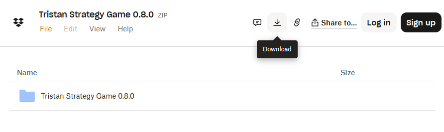

Download Instructions
Windows download link Alpha 2.0
- Click on the link
- Select File -> Download as in the picture below
- Take note of where you download it to (probably your Downloads folder)
- Right Click on Tristan Platform Alpha 3.0.zip and select "Extract All..."
- Run Tristan Platform.exe in the folder that gets created
- Click "Show More" and "Run Anyway" if your computer flags the file
- Enjoy!
